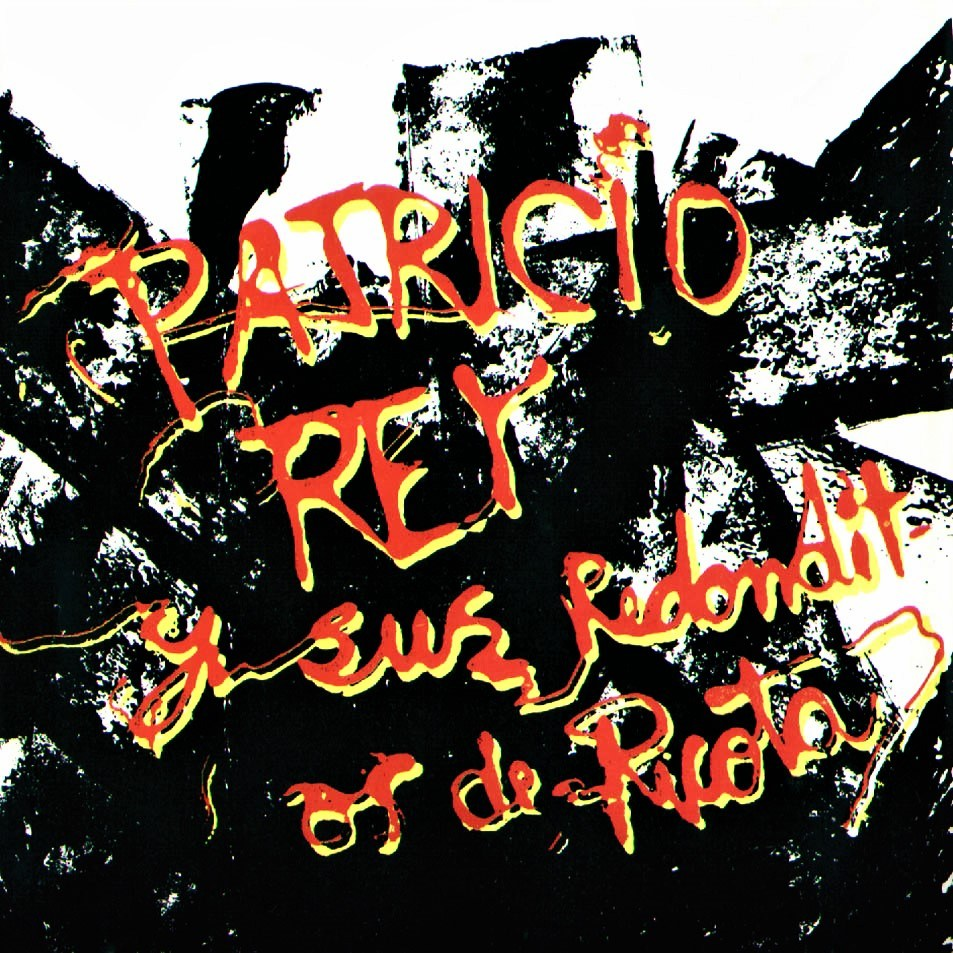
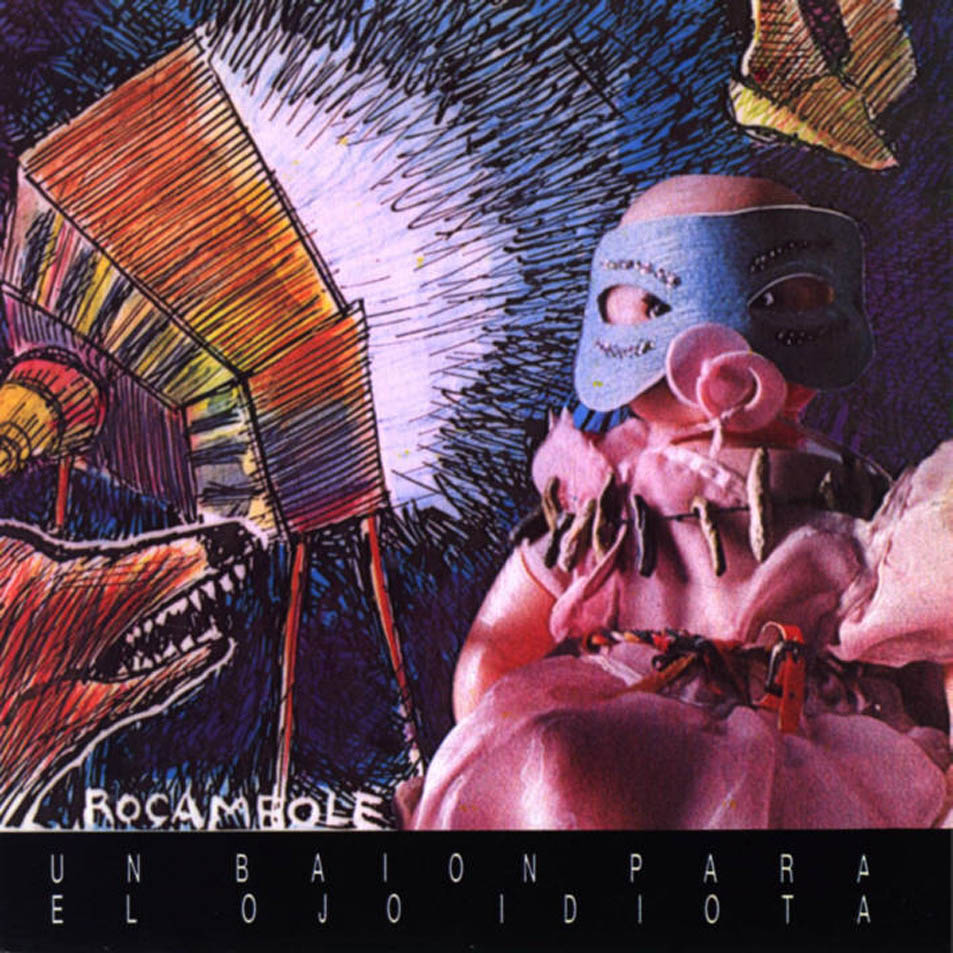

Patricio Rey y sus Redonditos de Ricota, también conocidos como Los Redondos, fue un grupo musical de Argentina formado en La Plata en el año 1976 e integrado, en su mayor parte, por el Indio Solari (voz y composición), Skay Beilinson (guitarra y composición), Semilla Bucciarelli(bajo), Walter Sidotti (batería) y Sergio Dawi (saxofón, armónica y piano). Es considerado uno de las grupos más importantes e influyentes de la historia de la música de Argentina y del rock latinoamericano en general.
Orígenes
La banda tuvo origen en La Plata, en 1976. Descendiente directa de La Cofradía de la Flor Solar, un movimiento cultural de aquella década. En un principio no tenía ni nombre ni integrantes fijos, sino que alrededor de 15 músicos que se alternaban en los instrumentos.Los tres pilares fundamentales de Los Redondos fueron: el Indio Solari (voz), Skay Beilinson (guitarra) y Carmen Castro, La Negra Poli (manager), a quienes se podría agregar Ricardo Cohen, Rocambole, el director artístico de la agrupación platense. Skay había integrado Diplodocum, junto a su hermano Guillermo Beilinson, Topo D' Aloisio, Isa Portugheis y Bernardo Rubaja. La conjunción de este grupo artístico con aquella movida de La Cofradía fue el puntapié de un inicio Redondo. Si bien la música siempre formó parte esencial de los shows de Patricio Rey, en las primeras presentaciones en los teatros de La Plata se colocaban en escena números de teatro y ballet,como una exhibición de rock teatral, con toda una troupe circense de monologuistas, payasos y bailarinas desnudistas, que entre canciones subían al escenario a hacer sus números. Progresivamente fueron deshaciéndose de los números teatrales, algo que terminaron de descartar tras la recepción de su álbum debut, Gulp! (1985). En 1981 retomaron el rumbo de los pubs, para llegar a grabar su primer demo profesional, en 1982: "Nene, nena", "Mariposa Pontiac", "Superlógico" y "Pura suerte" fueron los temas registrados en los desaparecidos estudios RCA, que lograron una importante difusión en las radios porteñas. Para ese entonces también se habían unido a la banda las coristas que integraban Bay Bisquits (Tellas, Fabiana Cantilo e Isabel de Sebastián). También participaba, en los shows, el periodista Enrique Symms, recitando y monologando en la introducción de cada espectáculo.
Discografía

Portada disco Gulp! (1985).
Arte de tapa Rocambole
En diciembre de 1984 grabaron "Gulp", la primer placa, editada en 1985 al público, en los estudios de MIA (Músicos Independientes Asociados), con Lito Vitale como operador y músico invitado en teclados. La plata para esta producción independiente provino de un pozo común formado por un porcentaje de las ganancias de cada show. La distribución comercial corrió siempre por cuenta de Poly. Temas como "El infierno está encantador esta noche", "La bestia pop" o "Ñam fri fruli fali fru" empezaban a sonar en las radios porteñas comenzando a lanzar a la banda a la masividad.
Portada disco Oktubre (1986).
Arte de tapa Rocambole
"Oktubre"(1986), el segundo trabajo discográfico, terminó de lanzarlos a la masividad. La prensa especializada coincidió en que ese material era un discazo. Los hits más importantes fueron "Semen-Up", "Música para pastillas" y “Jijiji”, siendo este último una de sus canciones emblemáticas.

Portada disco Un baion para el ojo idiota (1988).
Arte de tapa Rocambole
A mediados de 1988 editaron su tercer álbum de estudio, Un baión para el ojo idiota. Este álbum es considerado por el propio Indio Solari como el que refleja más fielmente el sonido del grupo. Casi todos los temas de este álbum se convirtieron en clásicos de la banda. Entre ellos está el que daría lugar al único videoclip de la banda, "Masacre en el puticlub", rodado en animación a partir de dibujos de Rocambole. Además, contiene una canción emblemática para la banda y su público, "Vamos las bandas” y otros hits como “Vencedores vencidos” y “Todo un palo”.
Portada disco Bang! Bang! Estás liquidado (1989).
Arte de tapa Rocambole
En febrero de 1989 los Redonditos se encerraron durante dos semanas en el estudio Del Cielito, en Parque Leloir. Allí dieron forma al álbum que los alejaría del sonido pop de los primeros trabajos discográficos y apostaría en una una dirección más cercana al rock'n'roll, el resultado fue el disco de sonido más fuerte de toda su discografía: ¡Bang! ¡Bang! ¡Estás liquidado! (1989). Es un disco corto (sólo 33 minutos) y de una gran potencia, con hits como "Esa estrella era mi lujo", "La parabellum del buen psicópata", "Héroe del whisky" y el marcial "Nuestro amo juega al esclavo".
Portada disco La mosca y la sopa (1991).
Arte de tapa Rocambole
El éxito acumulado con el lanzamiento de cada disco le permitió al grupo presentarse en Obras gran cantidad de veces durante 1989 y 1990 hasta el concierto en el que se ocasionó el conflicto de Walter Bulacio el 19 de abril de 1991. Después de este hecho, el grupo decidió que tenía que dejar de tocar por unos meses y se enfocó en la producción de lo que sería su nuevo material. Para fines del año 91, Los Redondos se volvieron a presentar en Obras con su nueva placa: "La mosca y la sopa" (1991), que tuvo en "Mi perro dinamita" y "Un poco de amor francés" a sus temas más importantes, además de otros hits como “Toxi Taxi”, “Tarea fina”, “El pibe de los astilleros” y "Queso ruso", esta última con una compleja lírica que refleja la situación después de la primera Guerra del Golfo.
Portada disco En directo (1992)
En 1992 lanzan el que sería su único álbum en vivo oficial, En directo, con registros de los shows en el Teatro de Verano de Uruguay el 8 de diciembre de 1989 y en el Estadio Obras Sanitarias el 29 de diciembre de 1991 y remasterizadas en Estados Unidos, este fue una especie de "pirata oficial" según el mismo Skay queriendo plasmar en el disco la alegría y el fervor de los recitales que la masividad les había dado.
Portada disco Lobo suelto, cordero atado Vol.1 (1993).
Arte de tapa Rocambole
Portada disco Lobo suelto, cordero atado Vol.2(1993).
Arte de tapa Semilla Bucciarelli
En 1993 retornaron con la presentación del doble álbum con 25 temas Lobo suelto-Cordero atado Vol.1 y Lobo suelto-Cordero atado Vol.2, presentando un rock más dinámico con ciertas innovaciones que mejoraban la calidad del sonido del álbum. El arte de tapa estuvo a cargo de Rocambole en Lobo suelto, cordero atado, vol. 1 y del bajista Semilla Bucciarelli en Lobo suelto, cordero atado, vol. 2. De esta producción se destacan: "Yo caníbal", "Caña seca y un membrillo", "La hija del fletero", "Un ángel para tu soledad", “Rock para el negro Atila”, “Susanita”, “El arte del buen comer” y “Etiqueta negra”. Además, se incluyen en el registro canciones experimentales como "Invocación", "Capricho magyar" y "Soga de Caín" que son solamente instrumentales. Por primera vez en su carrera, los Redondos se animaron a tocar en un estadio de futbol: dos noches consecutivas en Huracán, con 80 mil espectadores en total, dieron prueba de la aceptación del disco, marcando un nuevo hito en asistencia.
Portada disco Luzbelito (1996).
Arte de tapa Rocambole
En 1996 salió a la venta uno de sus álbumes más oscuros, y a la vez uno de los más populares, Luzbelito, el cual contaba con un sonido mucho más oscuro y una atmósfera opresiva, notoria en canciones como "Luzbelito y las Sirenas", "Cruz Diablo", "Fanfarria del Cabrío", "Rock Yugular". Este clima oscuro se reforzaba con las letras que hacían referencias a un hijo ficticio del demonio llamado Luzbelito. Por otra parte, se incorporaba el medley«Mariposa Pontiac - Rock del País» y "Blues de la libertad", canciones compuestas durante la primera época del grupo; el medley, especialmente, tiene un sonido de rock básico y directo, desentonando bastante con el tono del resto del disco. El tema del final, "Juguetes Perdidos" se convirtió en uno de los mayores clásicos de los recitales y en una de sus canciones más emblemáticas.
Portada disco Ultimo bondi a Finisterre (1998).
Arte de tapa Rocambole
Hacia fines de diciembre de 1998, Los Redondos se presentaron en el estadio de Racing Club de Avellaneda, para la presentación de "Ultimo bondi a Finisterre", el noveno disco de Solari-Beilinson. Dos shows con más de 45 mil personas, en cada uno, cerraron un año con Patricio Rey muy cerca de la Capital Federal, en donde no tocaban por cuestiones de seguridad. Este álbum representa el mayor giro en la estética sonora de los Redondos, pasando a un estilo más de rock electrónico gracias a la incorporación de sonidos digitales y samplers, ente sus canciones más conocidas se puede citar a “Gualicho”, “La pequeña novia del carioca” y “Alien Duce”.
Portada disco Momo sampler (2001).
Arte de tapa Rocambole
A finales del año 2000 se puso a la venta Momo Sampler, un álbum completamente «artesanal», según el propio Solari, ya que la misma banda no contrató a ningún artista ni empresa para estos trabajos, y se encargó de todo el diseño exterior del disco. Esta, que sería su última producción discográfica, siguió la línea que había comenzado a trazar Último Bondi a Finisterre, con sonidos más elaborados y una mayor participación de computadoras y aparatos digitales. En este disco solamente grabaron Solari, Aramberri y Beilinson, ya que se utilizaron los sonidos sampleados de Sidotti, Dawi y Bucciarelli. Entre sus temas más sonados podemos nombrar a “Una piba con la remera de Greenpeace”, “Pool, Averna y Papusa” y “El templo de Momo”.
Integrantes
Si bien la banda creada en 1976 por el Indio Solari (voz y composición; 1976-2001), Skay Beilinson (guitarra y composición; 1976-2001) y que ha contado como miembros más estables en su mayor parte con Semilla Bucciarelli (bajo; 1982-2001), Walter Sidotti (batería; 1987-2001) y Sergio Dawi (saxofón, armónica y piano; 1987-2001), ha sufrido a lo largo de sus años con varios cambios en su formación. Luego de su creación en el año 76 se agregaron al grupo en el año 77, Daniel Fenton en el bajo y Marcelo Pucci en batería; Fenton permaneció en la banda hasta 1982 y fue reemplazado por Semilla Bucciarelli, el cual se quedó hasta la disolución de la misma. Por su parte Pucci fue reemplazado en el año 82 por Alejandro Pensa, el cual permaneció un par de años para ser reemplazado luego por el Piojo Ávalos, el que fue baterista de los dos primeros discos de estudio de la banda (Gulp! y Oktubre) y se marchó en 1986 para unirse a Los Abuelos de la nada; lo siguió un breve pasó de Fernando Marrone (1986-87) para luego unirse de forma definitiva Walter Sidotti. El primer saxofonista de la banda fue Gonzalo “Gonzo” Palacios, que se unió en 1983 y permaneció hasta mediados de 1984 (tuvo una colaboración en el disco “Bang! Bang! Estás liquidado" de 1989), reemplazado por Willy Crook, que fue el saxofonista de los dos primeros discos (Gulp! y Oktubre) y luego se marchó del grupo en el año 87 con la llegada a la banda de Sergio Dawi, que permaneció en la banda hasta su disolución en 2001. Además, han tenido paso por la banda como segunda guitarra “Conejo” Jolivet durante tres etapas (1978-1980; 1993; 1998), y “Tito” Fargo (1984-1987), que tuvo participación en los dos primeros discos.